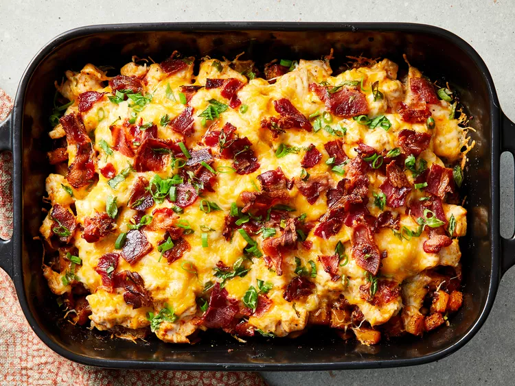

Buffalo Chicken and Roasted Potato Casserole
Home

Description
This Buffalo chicken casserole recipe was passed to me by a friend whose husband loved Buffalo wings and baked
potatoes.
I made it for the first time for my crew of boys and it was a big hit.
I made some shortcuts to the recipe, and to my surprise, it tasted even better.
Ingredients
- 6 tablespoons hot pepper sauce
- cooking Spray
- 1/3 cup olive oil
- 2 tablespoons garlic powder
- 1 tablespoon freshly ground black pepper
- 1 tablespoon paprika
- 1 1/2 teaspoons salt
- 8 potatoes, cut into 1/2-inch cubes
- 2 pound skinless, boneless chicken breast halves, cut into 1/2-inch cubes
- 2 cups shredded Mexican cheese blend (such as Great Value Fiesta blend)
- 1 cup crumbled cooked bacon
- 1 cup diced green onions
Steps
- Gather all ingredients
- Preheat the oven to 500 degrees F (260 degrees C). Spray a 9x13-inch baking dish with cooking spray.
- Heat hot pepper sauce, olive oil, garlic powder, black pepper, paprika, and salt in a large skillet over low
heat, stirring until thoroughly combined. Turn off heat.
- Toss potatoes in batches with the hot pepper sauce mixture to coat and use a slotted spoon to transfer
potatoes to the prepared baking dish. Leave remaining sauce in the skillet.
- Mix chicken into remaining sauce and allow to marinate while potatoes roast.
- Bake potatoes until tender inside and crisp and brown outside, 45 to 50 minutes, stirring every 10 to 15
minutes.
- Reduce oven heat to 400 degrees F (205 degrees C).
- Spread chicken cubes over roasted potatoes.
- Sprinkle shredded cheese, cooked bacon, and green onions over chicken. Return to the oven.
- Bake in oven until chicken is cooked through and the cheese topping is bubbling, about 15 minutes.